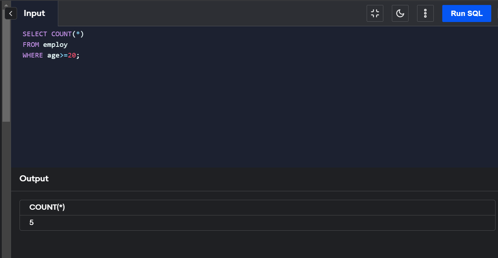
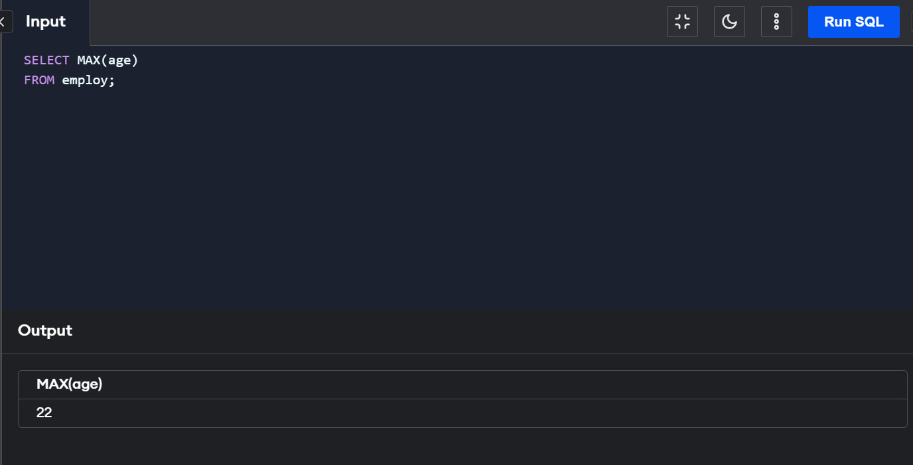
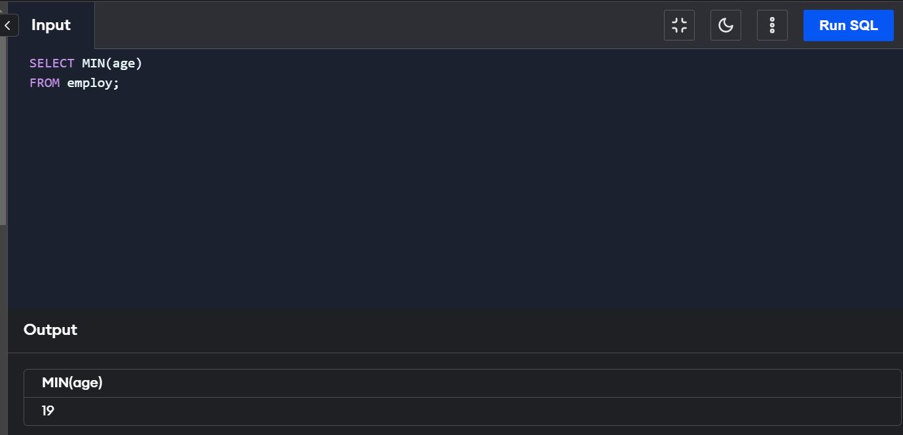

Aggregate Functions
SQL provides us with some really commendable features and aggregate functions are
definitely one of those features.
Aggregate functions in SQL are used to perform operations on multiple rows of a table and return a
single value. A single function can be used to compute multiple values and return the required result.
An aggregate function in SQL performs a calculation on multiple values and returns a single value. SQL provides
many aggregate functions that include avg, count, sum, min, max, etc. An aggregate function ignores NULL values
when it performs the calculation, except for the count function.
Aggregate functions in SQLs are an exceptionally useful feature in data retrieval from the database. The fact
that you can query data and apply functions in the same query is remarkable
A single-line query can be used to perform operations on multiple records. Using an SQL aggregate function saves
time as well as avoids any errors.
Types of Aggregate Functions in SQL
1.COUNT() Function
The COUNT() aggregate function returns
the total number of rows from a database table that matches the defined criteria in the SQL query.
Syntax:
COUNT(*) OR COUNT(COLUMN_NAME)
COUNT(*) returns the total number of rows in a given table. COUNT(COULUMN_NAME) returns the total number
of non-null values present in the column which is passed as an argument in the function.
2.SUM() Function
The SUM() function takes the name of the column as an argument and returns the sum of all the non NULL
values in that column. It works only on numeric fields(i.e the columns contain only numeric values). When
applied to columns containing both non-numeric(ex - strings) and numeric values, only numeric values are
considered. If no numeric values are present, the function returns 0.
Syntax:
SUM(COLUMN_NAME)
The function name is SUM() and the name of the column to be considered is passed as an argument to the function.
3.AVG() Function
The AVG() aggregate function uses the name of the column as an argument and returns the average of all the
non NULL values in that column. It works only on numeric fields(i.e the columns contain only numeric values).
When applied to columns containing both non-numeric (ex - strings) and numeric values, only numeric
values are considered. If no numeric values are present, the function returns 0.
Syntax:
AVG(COLUMN_NAME)
The function name is AVG() and the name of the column to be considered is passed as an argument to the function.
4.MIN() Function
The MIN() function takes the name of the column as an argument and returns the minimum value present in
the column. MIN() returns NULL when no row is selected.
Syntax:
MIN(COLUMN_NAME)
The function name is MIN() and the name of the column to be considered is passed as an argument to the function.
5.MAX() Function
The MAX() function takes the name of the column as an argument and returns the maximum value present
in the column. MAX() returns NULL when no row is selected.
Syntax:
MAX(COLUMN_NAME)
The function name is MAX() and the name of the column to be considered is passed as an argument to the function.


